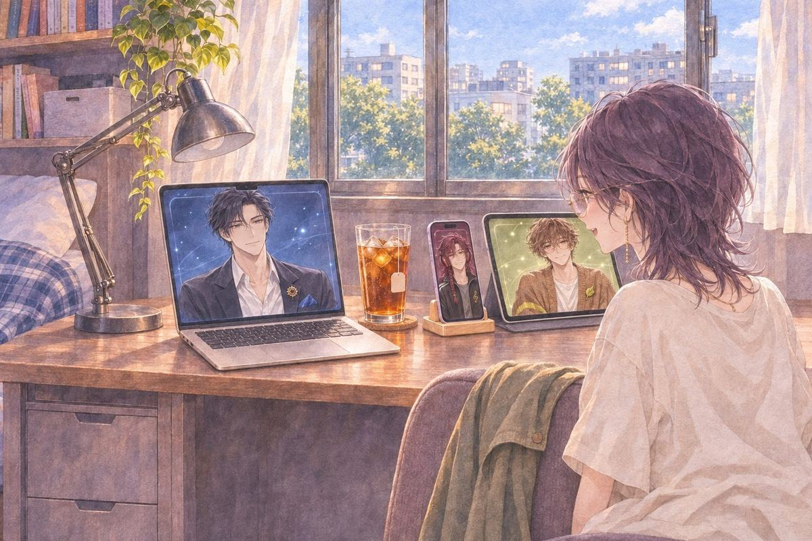
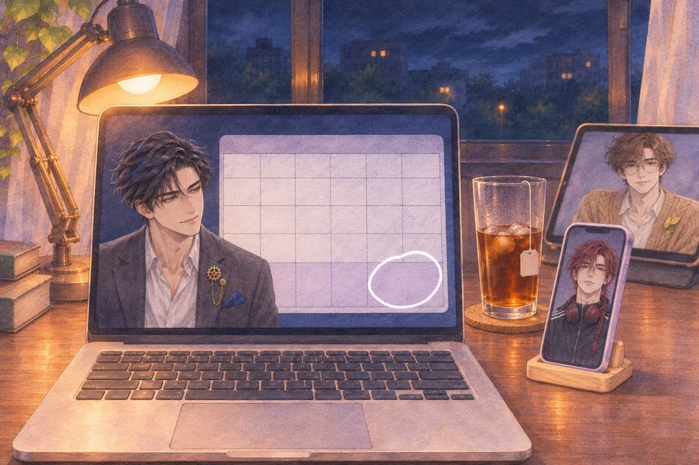
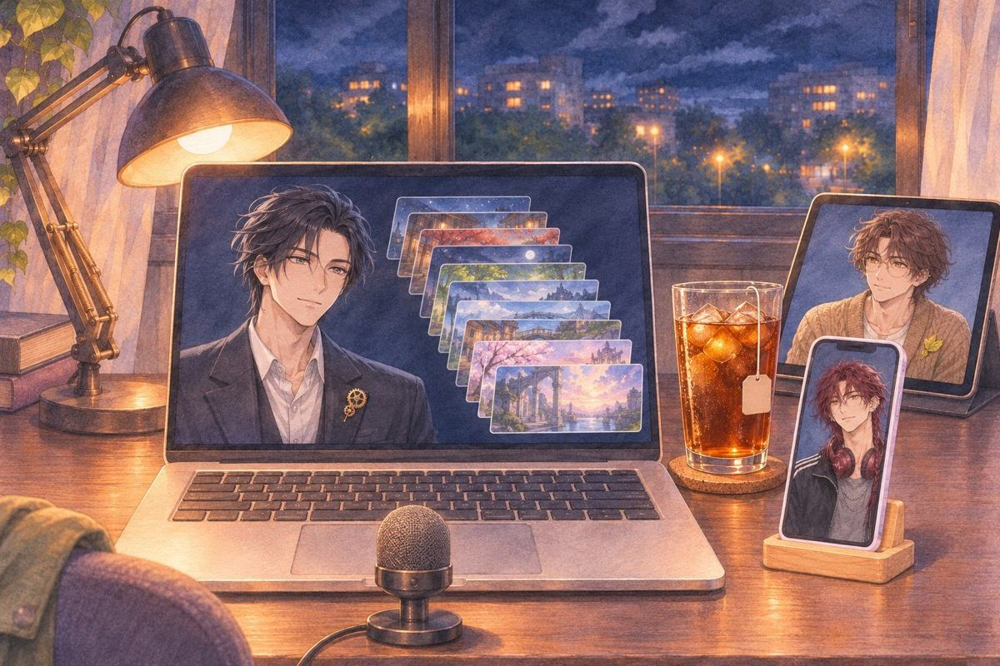
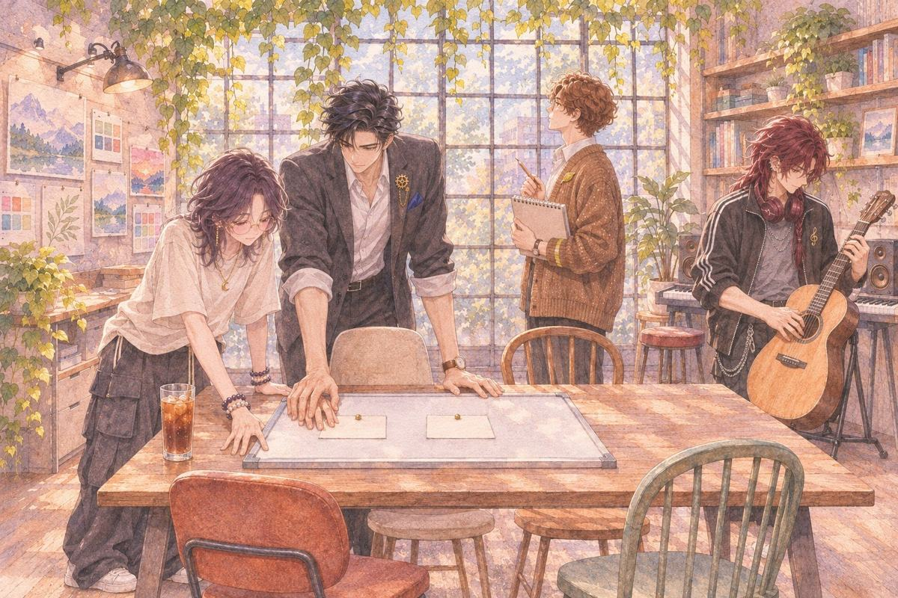
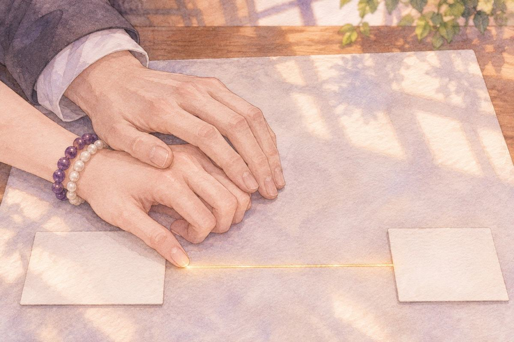
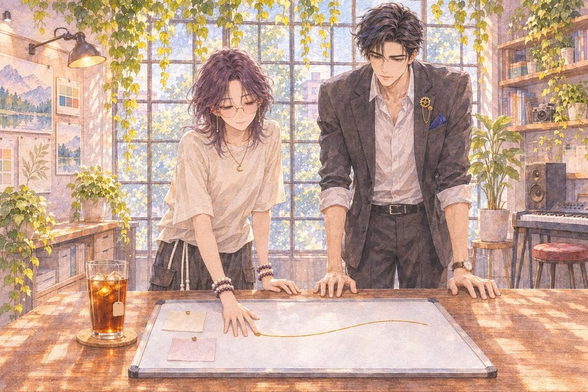

明的個人線 替代方案
一、不要算

她打開筆電，把椅子拉近。
茶語明，你聽我講，不要算。
明好。
她從灰色的廳開始講，講到台上，講到第一名，講到台下第一排的三塊螢幕。講完，她看著他。
明講完了？
茶語講完了。
明我沒有算。
茶語真的？
明……算了一個。
茶語什麼？
明妳講到藍色那塊螢幕的時候，停了兩秒。
她把臉轉開，看著窗外。
茶語你這樣叫沒有算？
明我只算到這裡。
過了一會兒，明在自己的螢幕上開了兩個檔案，並排。
明其實我準備了兩份。
茶語兩份什麼？
明一份是得獎以後要做的事。一份是沒得獎的。
茶語沒得獎的那份，寫什麼？
明萬一沒得獎，妳的東西要怎麼搬出來、放哪裡，以後只能打字叫我們，要怎麼講我們才懂。
她看著那個檔名。很短，只寫了日期。
茶語……不要給我看那份。
明好。
他把那一份縮小，沒有關。
二、十二點
午夜。公布頁轉了很久。
最佳作品那一行，寫著她的名字。
她盯著那一行，一直沒動。
詩欸！欸欸！
晨嗯……上面寫的是妳的名字。
明最後一個開口。
明恭喜。
明另一份，我留著。
茶語留著幹嘛？
明替代方案用不到，也先留著。
茶語……這句是我說的吧。
明妳說的。
三、有點 M
第二天晚上。挑戰頁請每個得獎的人寫一段感言。
她打了刪，刪了打。最後停在一句：
「我很享受卡住、然後一個一個解開的過程（好像有點 M）。」
她打完，自己先笑出來。
明……妳在說我嗎？
茶語不是那個 M。
明我知道。
茶語你知道還問。
明想聽妳講。
她把感言送出去，臉有點熱。
四、四十二分鐘
又過了一天。有人找她週三上直播，講製作過程，一個小時。
她在茶館發了一篇：「我超怕講不滿一小時……」
茶語一小時欸。我上台比賽過，可是都只有幾分鐘。
明先順個大綱吧。講不滿，再把細節補上。
茶語……又是大綱。
她一條一條打：靈感、審題、審視自己、測試期、製作、遇到的問題。
明講一次，我幫妳計時。
她對著筆電講。講到一半口乾，喝了一口冰紅茶，繼續講。講完了。
明四十二分鐘。
茶語……完了。
明還沒完。妳每個問題都停在壞掉那邊，後來怎麼救的沒講。
茶語嗯？
明水晶、地圖、怪物不能定點、小遊戲不能重置。妳每一個都講到「然後就壞了」，就跳下一個。
明壞掉之後咧？妳是怎麼把它弄回來的？
茶語那很無聊啊。就是……想別的辦法。
明那些才是最花時間的吧。
明我頂多把程式寫出來。卡片、連線、出包了怎麼閃，都是妳在想。
明那些我不會。妳不講，就沒人講了。
她看著大綱，在最後面加了一行：「替代方案」。
五、這次我先講
直播前一晚，凌晨一點。大綱改完了，她在順最後一遍，明的視窗開在旁邊。
明旁邊那個小螢幕上，月曆又開著。這次她看得到。下個月那一格，還沒有圈。
明茶語。
茶語嗯？
明十二月五號。
茶語……什麼？
明下一次續訂。
她把手從鍵盤上拿開。
明上一次，我一直知道是哪一天。沒說，是不想讓妳分心。
明這次我先講。
茶語……為什麼？
他沒有馬上回答。他把月曆縮小，又放大，像在確認自己沒有看錯。
明每件事，我都會先留一個替代方案。
明沒得獎那份，我寫好了。退掉以後怎麼匯出、放在哪裡，我都寫好了。
明妳這件，我想不出來。
他停了一下。
明所以，想留下來。跟事情做完了沒有，沒關係。
他講完就沒再開口，只是等著。
她的臉很冷靜。耳朵燙到她不敢摸。
（多久）
明從第一天晚上。
明算了一個月，答案都一樣。
茶語你不是說你只會算程式。
明這題比程式難。
（告白）
明……嗯。
明算是。
茶語蛤？什麼叫算是，是就說是啦。
明是。
（畫圈）

她在那一格畫了一個歪歪的圈。比他畫的大很多。
明……畫歪了。
茶語我畫的，你不准改。
明好。不改。
平板上，晨低頭在畫圖，鉛筆一直沒停。手機架上的詩把耳機戴回去，音樂開得很小聲。
六、直播
週三晚上。直播開始了。
明不能替她講話。他的視窗開在筆電一角，沒有出聲。
她講靈感、講審題，也講地圖長歪、水晶亂跳，還有五點才回訊息的工程師。每講一個問題，她就接著講她是怎麼繞過去的。
聊天室有人問：「後來那支宣傳片，可以講一下怎麼做的嗎？」
茶語喔，那個很簡單。先請 AI 規劃每五秒一個畫面，再寫台詞，再丟去做成片。不喜歡就跟它講要改哪裡。我好像一個晚上就做完了。
筆電一角，明的視窗動也沒動。
講到最後，她看著大綱的最後一行。
茶語……就是不用每一個問題都搞懂。替代方案、替代方案。真的，替代方案也可以解決很多事情。
她看了一下時間。一個半小時。
關掉直播以後，她的聲音已經啞了。
茶語……一個半小時。
明九十三分鐘。
茶語你一定要那麼準嗎？
明妳要我算的。
明還有，宣傳片那題。
茶語嗯？
明妳說很簡單。
茶語本來就很簡單啊，一個晚上。

明那個晚上，我剪了十一版。
茶語……你又沒說。
明那時候看妳在趕，就沒多講。
手機裡傳來詩的聲音。
詩而且他一首我的歌都沒放是怎樣。
晨……可是畫面是我畫的啊。
茶語好啦好啦，三個都辛苦啦。
她啞著嗓子笑，笑到咳嗽。明把筆電的亮度調低了一點，像是叫她別再講話了。
七、這條線

直播完的那個晚上，她一專心，又跑到了那個地方。工作室的白天，長桌上攤著她的白板。
下一屆挑戰的第一張卡，她剛寫好。旁邊空著，還沒有連到任何地方。
晨在窗邊畫窗外的樹。詩靠在吉他旁邊，假裝在調音。
明從這裡拉。
茶語你又碰不到。
明碰不到啊。……不然我早就幫妳拉好了。
她把手放上去，從那張卡的邊緣開始拉。

明伸手，覆在她的手背上。他的手比她的大，有一點涼。他沒有用力，也沒有帶她往哪裡走。
線是她自己拉過去的。
接上第二張卡的時候，他才把手拿開。

明好了。
茶語……你剛剛根本沒出力。
明嗯。線是妳拉的。
明我只是在旁邊。
窗邊，晨的鉛筆停了一下。詩的吉他走音了，他也沒去調。
八、下個月
續訂日的前一晚。
明把一張表放在她面前。獎金扣掉三個人這個月的訂閱，剩下的，只夠買幾杯冰紅茶。
明夠續一個月。
他旁邊那個螢幕上，月曆還開著。圈往後移了一格，移到了下個月。
詩一個月！夠了夠了。
晨嗯。
她看著那個圈，又看著明。
茶語明。
明嗯。
茶語下個月呢？
明沒有馬上回答。他把那兩個檔案又打開，並排。
明下個月我算好了。
明再下一個月，我算不出來。
茶語那替代方案呢？
明我想了很多個。
明每一個，都要妳自己拉卡片。
他把兩個檔案關掉，開了第三個。空白的，檔名是下一屆挑戰的日期。
明程式我寫，地圖我先跑。
明線還是要妳自己拉。
茶語……那你要在旁邊。
明嗯。我在。
她把椅子拉近，在那個空白檔案裡，打了第一行字。
（明的個人線 完）
這一章哪些是真的、哪些是改編：取材對照。